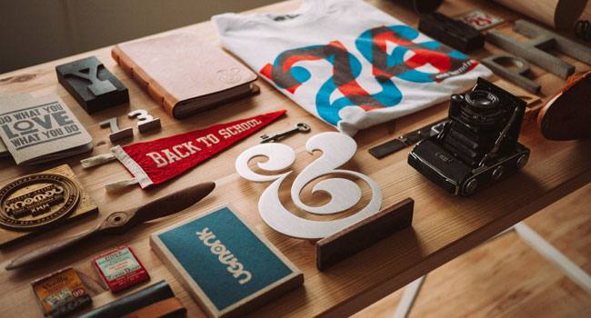
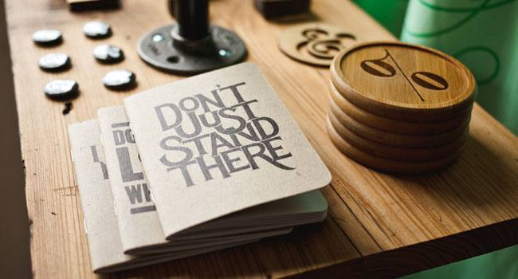
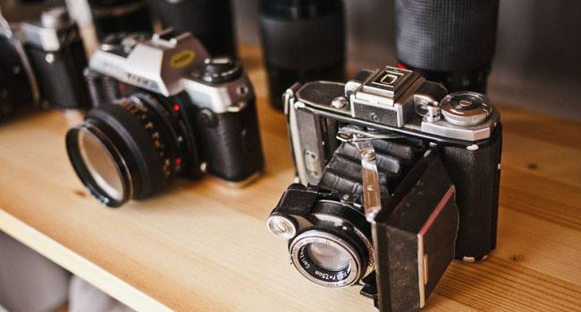
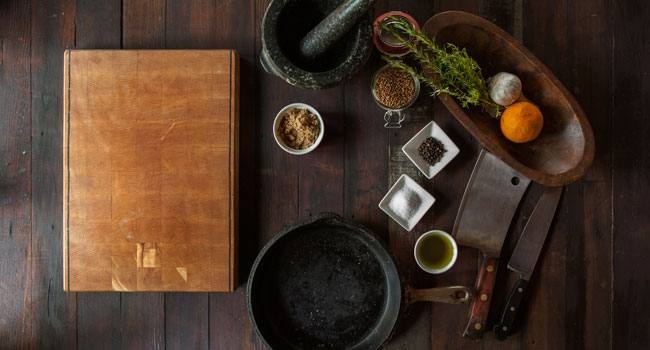
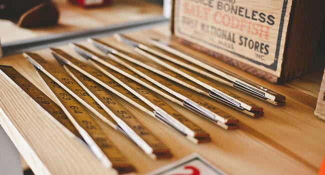
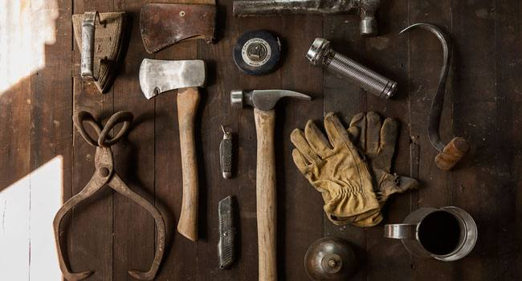

Letterpress print — “Back to School”
Two-colour print on 300 gsm cotton, 30×40 cm
€38
Letterpress prints, bound notebooks and carefully restored vintage cameras from a small workshop on Alberta Street.
Browse the shopSmall batches. Once a piece is gone, it’s gone — new ones arrive every few weeks.

Two-colour print on 300 gsm cotton, 30×40 cm

Stitched spine, 120 pages of recycled paper

Serviced and tested, with a 3-month warranty

Oiled walnut, hand-turned mortar

Cedar-cased, sharpened by hand

Axe, hammer and gloves — gift set for the shed
Two people, one old press.
Oak & Ledger began in 2016 when Ana found a cast-iron platen press in a closing print shop and Mikhail, a carpenter, built a bench for it. The first run was fifty prints for a friend’s café.
Today we make prints, stationery, small wooden goods and — because Mikhail can’t help it — we repair and resell old cameras. Everything is made within ten blocks of where you’re reading this, from paper and timber sourced from mills we can name.
Slow on purpose.
FSC-certified timber, cotton paper from a family mill in Maine, vegetable-based inks.
Every piece is printed, cut, bound or turned by hand. No outsourcing, no machines we can’t service ourselves.
Each item is inspected and signed off before it’s packed in recycled card and paper tape.
Orders leave within three working days. Free delivery in the EU and US above €80.
One short email when a new batch is ready. Nothing else.
Thank you — you’re on the list.